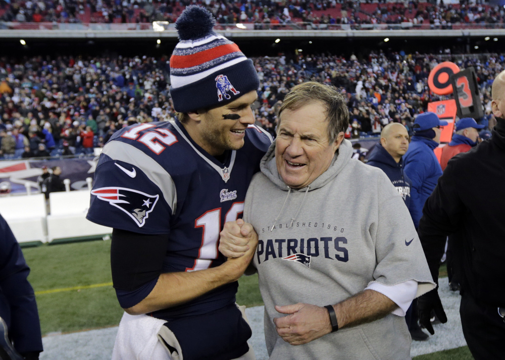

After a heartbreaking Superbowl loss last season, like the celtics, the patriots didn't start their season very well. Many in New England thought the dynasty was falling apart, Tom Brady was washed up and couldn't throw the ball like he used to, and Bill Belichick didn't have control of the team. This whole time the patriots were in fact winning games just not the in the fashion Pats fans are used to. The games they were winning were played very sloppy and the team somehow managed to squeak past by very small margins. Towards the end of the season the team started to play their typical "December football" which has led them to another shot at the superbowl. Brady is set to play in his 9th superbowl which is an NFL record. Brady truly is the G.O.A.T.
